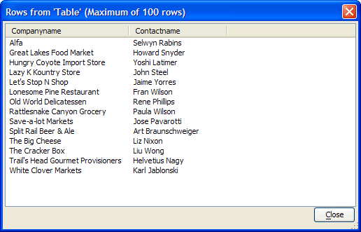

SQL_ResultSet_Preview()
Syntax
SQL_ResultSet_Preview( ResultSet as SQL::ResultSet )
|
Argument |
Description |
|
ResultSet |
A SQL::ResultSet object created by the SQL::Connection::Execute() method. |
Description
The SQL_ResultSet_Preview() function displays the contents of a SQL::ResultSet returned from a back-end database by a SQL SELECT statement. This function is useful for testing a SQL SELECT statement.
Example
The script below retrieved this data from an Access database, then displayed the SQL::ResultSet in the Rows from Table dialog.

|
dim cn as sql::connection cn.open("{A5API=Access,FileName='C:\Databases\Northwind\northwind.mdb',UserName='Admin'}") sql = sql_query_builder(cn)
? sql = SELECT CompanyName, ContactName FROM Customers WHERE (Country = 'USA') cn.Execute(sql) sql_resultset_preview(cn.ResultSet) |
See Also
SQL Helper Functions, SQL::Connection Object